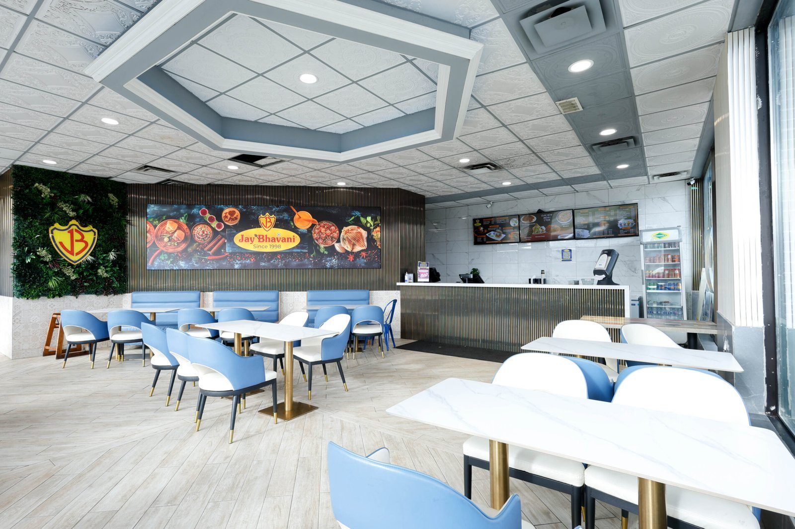
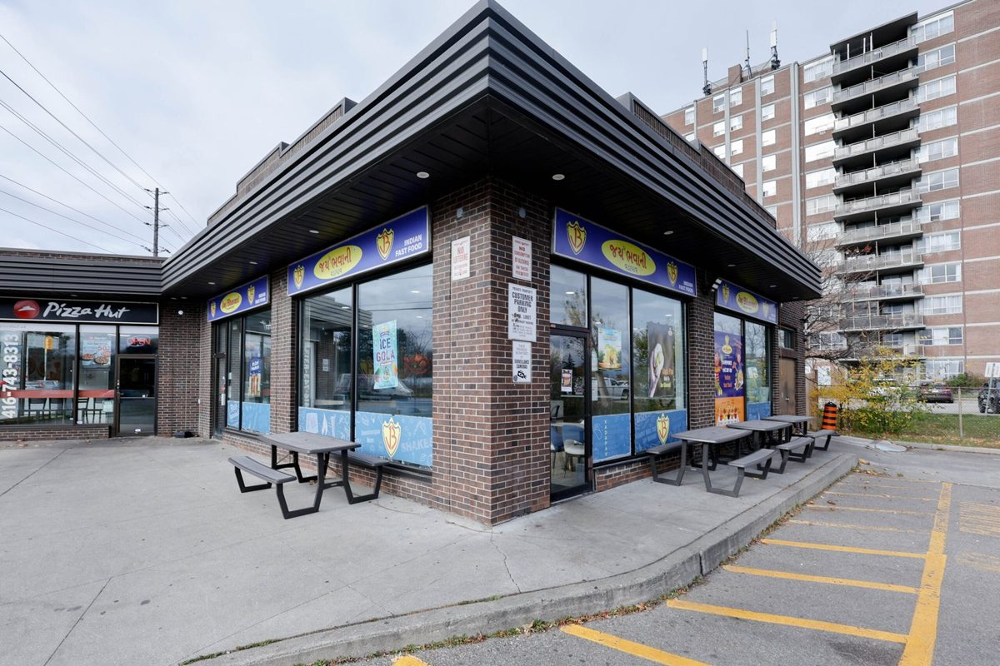
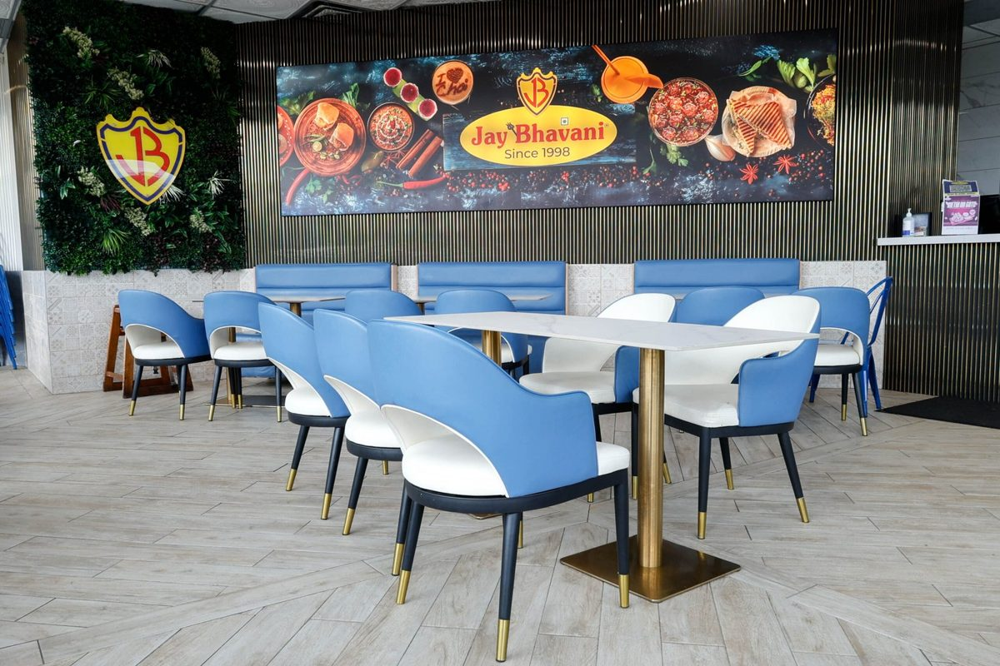
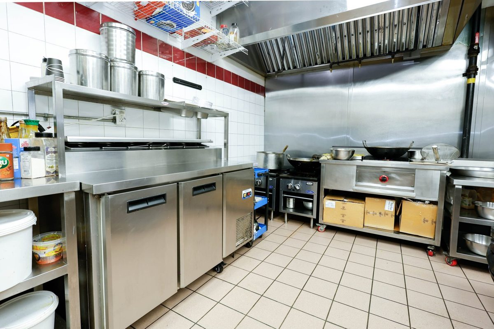

Franchise buildout / Etobicoke, Ontario
Jay Bhavani
One brand. Every detail connected.
An end-to-end franchise buildout connecting a bright dining room, branded interiors, the service area and a commercial kitchen.
Completed under LifeBuild Canada. Shown here as prior project experience; the documented work follows.

View photographThe work
The thinking.
The making.
- Civil work
- Custom interiors and brand integration
- Service area design
- Commercial kitchen installation
The buildout connected civil work, custom interiors, the service area and kitchen installation. The space translates the franchise identity into a working restaurant, from the customer-facing finishes to the preparation area.
Blue seating, graphic wall panels and a geometric ceiling feature tie the front of house together. The kitchen photograph documents the stainless-steel work surfaces and cooking equipment behind the service area.
Franchise interiors · Service planning · Kitchen installation
A closer look
The space, in detail.


View photograph

View photograph

View photographPlanning a renovation, hospitality interior or commercial build?
Tell us about your projectPrefer email? Write to info@terranode.ca.